-
Usar las funciones Flecha como Expresiones
Una característica particular de las funciones flecha es que estas son capaces de usarse como expresiones para retornar un dato. Como se ha dicho anteriormente, una de las ventajas de las funciones flecha es su sintaxis reducida, la cual puede simplificarse aún más para usarse como expresión; esto se logra si la función está compuesta por una única expresión la cual se defina en la misma línea de código que la declaración de la función, en cuyo caso se permite eliminar el cuerpo de la función (delimitado por "{ }"), resultando en que la función trabaje como una expresión y retorne un valor por sí misma.
Ejemplo Función Flecha
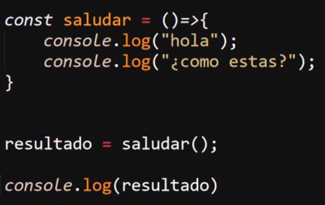
Ejemplo expresión con la Función Flecha
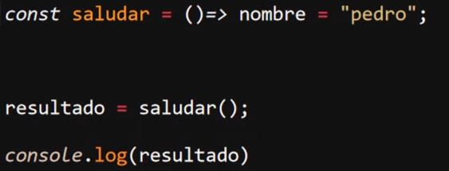
En el primer ejemplo, al mostrar en consola la variable "resultado", esta muestra un "undefined", ya que la función flecha común no retorna un valor que pueda ser almacenado en la variable; únicamente se ejecuta el código expresado en el cuerpo de la función. Por otro lado, en el segundo ejemplo la función se trabaja como una expresión, por lo que esta retorna el dato en cuestión; por lo cual este dato se almacena en la variable "resultado" y se imprime en consola.
Por ejemplo, a continuación se muestra la comparación de cómo se realizaría el mismo retorno con una función clásica y con una función flecha; como se puede apreciar, la función flecha permite simplificar bastante el código:
Ejemplo
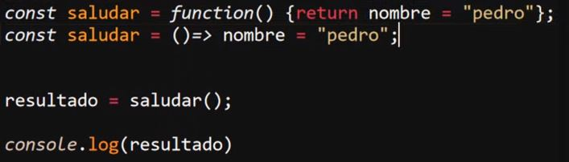
-
Los Paréntesis de los Parámetros no son Obligatorios
En caso de que la función reciba parámetros para operar y estos solo estén conformados por un solo parámetro, se pueden eliminar los paréntesis para simplificar la sintaxis. En caso de que la función reciba dos o más parámetros, los paréntesis serán necesarios.
Ejemplo
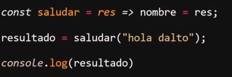
Por otro lado, si la función no recibe ningún parámetro, los paréntesis también serán necesarios, ya que al definirse vacíos indican que no se requiere ningún parámetro:
Ejemplo
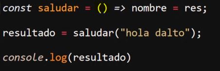
-
No Son Adecuadas Para Ser Usadas Como Métodos, El "this" no Existe En Ellas Y No Pueden Ser Usadas Como Constructores
Para definir los métodos de un objeto se utilizan funciones; este es un caso de uso para el que no se recomiendan las funciones flecha, debido a que el "this" se comporta de forma diferente en estas.
En las funciones normales el "this" hace referencia al elemento que está llamando al dato dentro de esta, mientras que en las funciones flecha se dice que el "this" no existe ya que este hace referencia al objeto "window", o en el caso de estar en un nivel varias veces inferior al bloque principal del documento, "this" hará referencia al objeto un peldaño por arriba. Por lo tanto, en ambos casos "this" ignora los elementos definidos dentro del objeto que lo ejecuta, lo que resulta en que el "this" tome como valor elementos externos al objeto.
Ejemplos
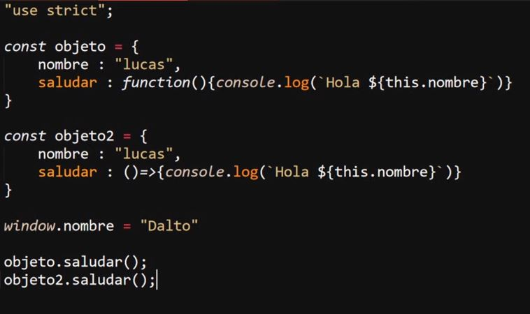
En esta imagen se pueden apreciar dos objetos. El primero, "Objeto", usa como método una función tradicional; por lo tanto, el "this" hace referencia a los elementos definidos dentro del objeto, dando como resultado "Hola Lucas".
Por otro lado, el segundo objeto, "objeto2", usa un método definido con una función flecha, por lo que este al usar "this" hace referencia a un objeto externo (window), por lo que toma como valor este dato externo, dando como resultado "Hola Dalto".
Debido a este comportamiento anormal del "this" en las funciones flecha es que estas no pueden ser utilizadas como constructores de un objeto. En el caso de tener activo el modo estricto, se dispara un error en caso de intentar usarla como tal; si por lo contrario el modo estricto no está activo, no se dispara el error en consola, pero de igual forma la función flecha no funcionará como constructor.
-
this Contextual
El "this" contextual hace referencia al entorno en el que se ejecuta el "this", esto ya que, como se mencionó antes, su comportamiento varía según el cómo o dónde se emplee.
Siempre que se utilice fuera de algún objeto o alguna función, es decir, se utilice en el cuerpo principal del documento, el método "this" va a hacer referencia al objeto "window" (a menos que el modo estricto esté activo, entonces no lo referencia); no obstante, al usarse dentro de una función tradicional o un objeto, este "this" tendrá un alcance local, en el que hará referencia a los elementos o propiedades de estos.
Debido a esto es que no se recomienda el uso de "this" en las funciones flecha, ya que en estas ignora el nivel de alcance local y siempre mantendrá el alcance un peldaño por arriba, por lo tanto siempre hará referencia al objeto que llama a la función que ejecuta a la función en la que se usa el "this".
-
Recursividad
Se trata de la práctica de desarrollar una función que se llama a sí misma. Es una práctica muy útil en algunos casos; sin embargo, es un recurso que es necesario saber emplear, ya que de estructurarse mal la función recursiva se puede entrar en un bucle infinito que sature el dispositivo.
El punto de la recursividad es reutilizar el código ya creado para cubrir ciertos casos o repetir acciones de forma controlada.
Ejemplo
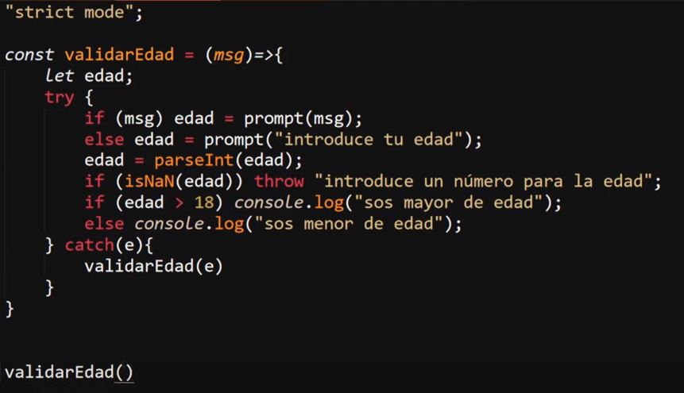
En este ejemplo se puede apreciar una función recursiva debido a que se llama a sí misma para el manejo de los errores.
-
Cláusulas (o Cierres)
Se tratan de funciones que retornan otras funciones; de ese modo, la función hijo puede acceder al ámbito de la función padre. Un ejemplo de esto es:
Ejemplo
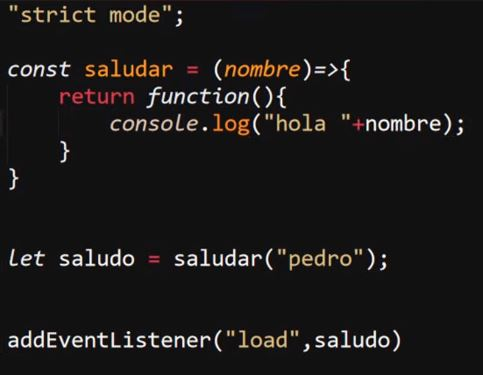
Resultado
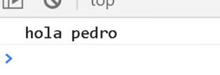
Nota: En este ejemplo la función hija solo funciona si el llamado se guarda en una variable; si solo se llama a la función y se define el dato sin guardar esto dentro de una variable, esta función no funciona.
Un ejemplo práctico de cómo se integran las cláusulas en el código es el siguiente: se muestra un código que selecciona el "div" que contiene un texto, añade la propiedad CSS "fontSize" a este, luego selecciona tres botones, inicializa escuchadores de eventos para estos y, según cuál sea el botón en el que se haga clic, modifica el valor de la propiedad "fontSize" que se está añadiendo al "div":
Sin Utilizar Cláusulas
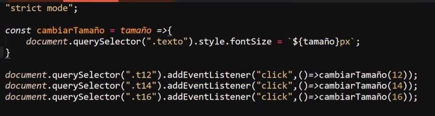
Empleando Cláusulas
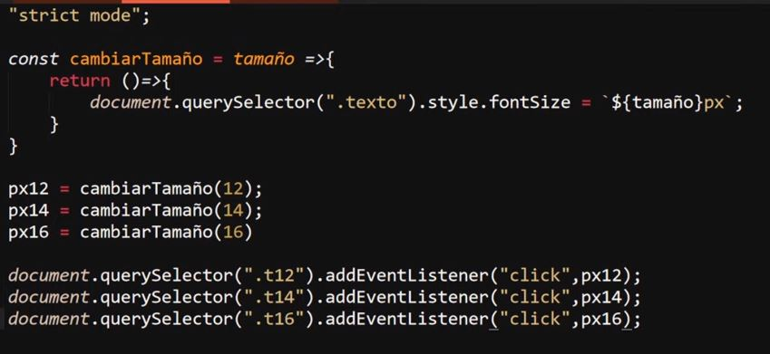
-
Parámetros por defecto
Definir parámetros por defecto consiste en asignar un valor alternativo para los parámetros de una función, los cuales se aplicarán en caso de que por cualquier motivo no se obtengan todos los parámetros completos.
Esto es necesario ya que JavaScript es un lenguaje con cierta flexibilidad en cuanto a los parámetros de las funciones se refiere; por ejemplo, si se suministran más datos de los necesarios, los que sobren simplemente serán ignorados. A su vez, si se suministran menos, la función igualmente se ejecutará aun si no puede realizar adecuadamente los procesos en esta.
A continuación se muestran dos formas en las que se definían anteriormente valores por defecto a los parámetros de una función, así como una tercera forma la cual es la recomendada actualmente:
Primer método:
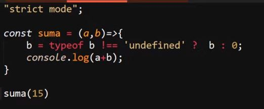
Nota: Este método no se recomienda en absoluto.
Segundo método:
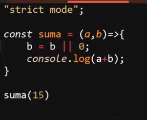
Método Actual:
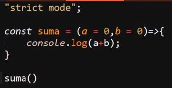
En todos estos ejemplos el efecto es el mismo: en caso de que solo se suministre un parámetro, el otro se igualará a cero para realizar la operación.
-
Parámetro Rest
El parámetro "rest" consiste en un array que alberga todos los parámetros que se pasen a la función, permitiendo que una función reciba una cantidad indefinida de parámetros.
La forma de declarar el parámetro "rest" es con tres puntos sucesivos (...) seguidos del nombre que se le asignará.
Ejemplo
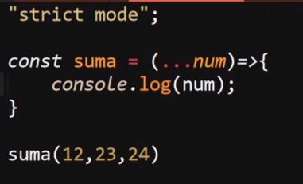
Resultado
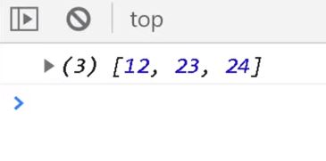
Una característica del parámetro rest es que se pueden definir otros parámetros junto con este, pero estos deben definirse antes de "rest". Por lo tanto, para funcionar adecuadamente, el parámetro "rest" debe definirse al último en la función. Por otro lado, para acceder a los datos almacenados en este se utiliza el numerador de la posición del dato como en cualquier otro array.
Ejemplo
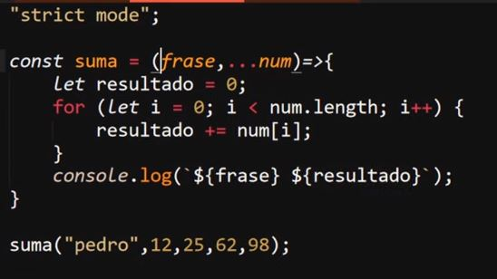
Resultado
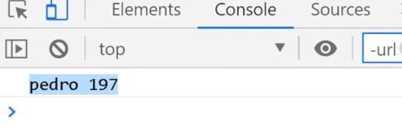
En este ejemplo se utiliza el parámetro "rest" para definir "x" cantidad de datos numéricos; luego se usa un ciclo "for" para recorrer el "rest" y operar dos de sus datos, para luego mostrar los datos seleccionados en consola.